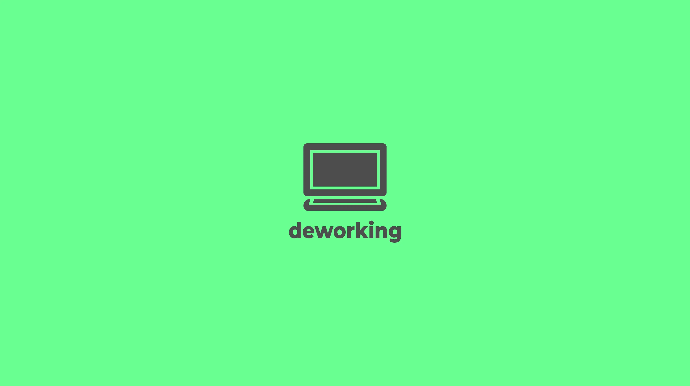

Deworking (Decentralized Work) – The Labor Markets of the Future?!
Introduction: The Dawn of the Decentralization Era.
In recent years, the world has witnessed significant changes in the way we communicate, interact, and even work. The development of blockchain technology has given rise to revolutionary concepts such as DeFi (Decentralized Finance), DePIN (Decentralized Physical Infrastructure), DeSci (Decentralized Science), and more. These innovations are not just trendy buzzwords—they represent a fundamental transformation of our social and economic structures.
In this article, we explore the digital changes that may ultimately lead us to a revolutionary idea: Deworking—a decentralized labor model that reimagines how we collaborate and earn in the digital age.
Chapter 1: The Revolution of Decentralization.
The Rise of DeFi: Rethinking Financial Systems.
Decentralized Finance, or DeFi, has sparked a true revolution in the financial sector. Traditional banks, the lifeblood of modern economies, are being forced to transform in the face of rapidly developing decentralized platforms that enable anyone with internet access to obtain loans, save, and invest without intermediaries. By relying on blockchain-based protocols, DeFi makes finance more inclusive, transparent, and accessible. By eliminating centralization, DeFi democratizes the financial sphere, allowing people to fully control their assets and participate in the global market.
DePIN: A New Vision for Physical Infrastructure.
While DeFi is transforming financial systems, DePIN is gradually reshaping our understanding of physical infrastructure. From energy grids to transportation systems, DePIN utilizes blockchain to decentralize control and investments. Imagine a future where public services and utilities are managed by a network of stakeholders rather than by centralized organizations. This not only enhances transparency but also creates new opportunities for community-driven projects, where investors and participants can collaborate globally without barriers.
DeSci: Democratizing Science.
Another emerging direction is DeSci, or Decentralized Science. DeSci aims to break down barriers in scientific research. By leveraging the transparency and immutability of blockchain, DeSci initiatives enable scientists from around the world to share data, collaborate on experiments, and verify results in an environment free of traditional obstacles and trust issues. This collective approach accelerates discovery and innovation, making science accessible to everyone.
Chapter 2: From Trends to a New Model of Work.
What Do DeFi, DePIN, and DeSci Have in Common?
Although each of these innovations targets a different sphere, they share one common principle—decentralization. The “De” prefix in DeFi, DePIN, and DeSci symbolizes a move away from centralized management towards a distributed model. This shift empowers people to actively participate in processes—whether it’s earning interest on deposits in DeFi, investing in infrastructure projects, or contributing to scientific research.
Deworking: The Evolution of the Labor Market.
As our world becomes increasingly digital, it is only natural that the ways we work also evolve. New technological possibilities are emerging for the concept of Deworking. If decentralization can transform finance, infrastructure, and science, why not reshape work itself? Deworking leverages blockchain to create a system where collaboration is decentralized and every participant’s contribution is transparent and fairly rewarded.
Chapter 3: Decoding Deworking – A New Format of Interaction.
What Is Deworking?
Deworking is the idea of decentralized labor—a model in which traditional employment is replaced by flexible, project-based collaboration. Rather than being tied to a conventional employer, people can join decentralized projects that match their skills and interests. In this system, collaboration can be organized through decentralized autonomous organizations (DAOs), in which decisions are made collectively and every action is recorded on the blockchain.
How Does Deworking Work?!
Imagine a digital labor marketplace where project pools are presented similarly to job postings on freelance platforms or crowdfunding campaigns—but with an added layer of openness provided by blockchain. For example, consider the following simplified process:
-
Project Selection: A diverse range of projects is available—from creating creative content to developing software. Interested individuals review the projects and choose those that align with their skills and interests.
-
Management via DAO: Each project can operate within a DAO framework, where participants make collective decisions, ensuring that everyone’s opinion is considered. This structure also helps regulate the distribution of resources collectively.
-
Smart Contracts and Tokenized Rewards: Every contribution is “recorded” on the blockchain, and smart contracts automatically distribute tokens as rewards. These tokens may represent a share in the rights to the final product, which, in case of the project’s success and monetization, serves as an incentive proportional to the actual contribution.
-
Scalability and Flexibility: By its nature, Deworking is highly scalable—participants from all over the world, regardless of their technical expertise, can join projects. Whether you’re an experienced professional or a novice with basic digital skills, the entry barrier is low.
Chapter 4: The Mechanism of Deworking.
The Synergy of Creativity and Technology.
At the heart of Deworking lies the idea of optimizing and enhancing collaborative labor by increasing accessibility, transparency, and creating new forms of interaction. This enables people to collectively realize projects that were previously unfeasible due to a lack of resources (knowledge, time, funds, investments), among other factors.
This model allows for the merging of work, creativity, and technology, enabling individuals to participate in projects without needing deep technical knowledge or significant resources. This inclusivity makes Deworking unique: it’s not just about using blockchain for collaboration, but about creating a community where every contribution is valued, and opportunities for self-realization are greatly multiplied.
The Role of AI in Deworking.
One of the most intriguing aspects of Deworking is the potential integration of AI agents into the work process. As artificial intelligence technology advances, these agents may become full-fledged participants in global collaborative interactions. They could analyze data and even work alongside people in creative and other processes as part of the overall labor activity. Imagine a scenario where an AI agent edits an animated film or performs other tasks, helping to realize a project and receiving rewards—essentially earning money on its “own work.”
It is hard to say whether this is good or bad, but it is a reality. Such collaboration between humans and AI could significantly boost productivity and innovation. With blockchain ensuring data privacy, we might not even know if we are interacting with a human, an AI agent, or a robot.
Breaking Down the Deworking Process.
Imagine the start of a workday. Instead of commuting to an office, you log onto a decentralized platform that hosts a multitude of projects—from developing a mobile application to creating a short animated film. Today, you choose to work on an animation project managed by a hypothetical DAO. As you contribute—whether by creating a storyboard or working on sound—you push the project forward. Every task you complete is automatically recorded and displayed on the blockchain via smart contracts.
This is the core principle of Deworking—a flexible, decentralized ecosystem where collaboration knows no boundaries, marking the evolution of the labor market.
Chapter 5: A Model of Decentralized Collaboration – The Example of the "Alania" creative studio.
To illustrate the Deworking model, consider a hypothetical case study: the creative studio “Alania,” which specializes in creating creative content such as animated videos, logos, websites, etc.
Traditionally, such studios have always been centralized, which means they have a hierarchy and fixed roles typical of conventional companies and organizations. However, thanks to technological advancements and the emergence of new mechanisms—particularly Deworking—a previously unattainable opportunity arises to rethink the way such studios (and companies in general) operate by transitioning to a decentralized, blockchain-based model.
In practice, this might work as follows:
-
Open Participation: Unlike traditional studios, “Alania” could operate based on Deworking using an open invitation model. Artists, scriptwriters, animators, technical specialists, and even AI agents could join the hypothetical project. Every task and its corresponding action would be recorded on the blockchain, ensuring complete transparency.
-
Creativity Governed by DAO: Decisions could be made collectively within a potential DAO, allowing every community member to propose ideas, vote on various issues concerning the DAO’s activities, participate in the allocation of a hypothetical budget, and so on.
-
Tokenized Rewards: As the studio’s projects gain popularity and begin to generate revenue, it would be possible to distribute earnings via tokens. These tokens could represent a reward for one’s contribution in the form of a share in the successful project. Such a mechanism would ensure that rewards are fair and proportional to the effort and creativity invested.
-
AI Integration: AI tools could become integral participants in the work process, collaborating alongside humans on tasks such as animation rendering, sound editing, script creation, etc. This cooperation between humans and AI would boost overall productivity, though it does carry certain risks, as AI could literally earn money and become a full participant in the global labor market.
Transformative Impact on the Creative Industry.
This example is just one illustration of how the decentralized Deworking model can revolutionize the creative sphere. It offers a fresh perspective on how other industries might adopt similar models in the future. By eliminating the bottlenecks of traditional interaction mechanisms, decentralization can lead to more efficient, innovative, and inclusive collaborative creative work.
Chapter 6: The Advantages and Challenges of Implementing Deworking.
Advantages of the Decentralized Work Model.
-
Inclusivity: Deworking opens up opportunities for people from all walks of life, regardless of their geographic location or technical expertise. It gives everyone a chance to participate in various projects by removing the barriers typical of conventional employment.
-
Transparency and Trust: With blockchain, every contribution can be recorded, verified, confirmed, and rewarded. This level of transparency helps build trust among participants and ensures fair distribution of rewards.
-
Flexibility and Autonomy: Participants have the freedom to choose projects that match their skills and interests. This freedom leads to greater job satisfaction and improved quality of outcomes, as people can engage in work they truly enjoy.
-
Enhanced Collaboration: Deworking creates a community where decisions made collectively via DAO harness the combined intelligence and creative potential of all members, generating a colossal synergistic effect.
Potential Risks and Challenges.
-
Technical Barriers: Despite its benefits, the success of Deworking largely depends on the security, user-friendly interfaces, and robust infrastructure. Overcoming the gap between complex blockchain technologies and everyday user needs is a major challenge.
-
Regulatory Uncertainty: Like other blockchain-based innovations, the legal framework is still in development. The decentralized nature of Deworking may pose challenges in obtaining legal recognition and ensuring compliance across different jurisdictions.
-
Fair Distribution of Rewards: Although smart contracts can automate the reward distribution process, continuous refinement of these mechanisms is necessary to ensure that rewards fully correspond to each participant’s contribution.
Chapter 7: The Future of Decentralized Labor Markets.
Reaching New Heights with Deworking.
As blockchain technology matures and decentralized models spread, Deworking could become the core of future labor systems. Imagine a world where traditional jobs are replaced by a dynamic network of decentralized projects, where collaboration effortlessly overcomes geographical boundaries, and the value of creative and labor contributions is assessed in real time.
Embracing Change: A New Social Consensus.
Deworking is not just a technological innovation; it represents a new format of the social contract. In a world where access to opportunities is democratized, traditional hierarchies give way to a model in which every contribution matters. Such a paradigm shift can lead to a fairer, more innovative, and inclusive economy, driven by the desire for creativity and innovation rather than mere survival.
The Role of Continuous Innovation.
The integration of artificial intelligence and other cutting-edge technologies will continue to shape the future of decentralized work. As AI becomes more advanced, it will not only take over many routine tasks and open new horizons for creativity, but also become a full participant in interactions. The synergy between people and AI can fundamentally change our understanding of what it means to work, collaborate, and create.
Chapter 8: The Path Forward for Deworking.
Building a Robust Ecosystem.
For Deworking to reach its full potential, it is essential to create a solid ecosystem that unites technological, regulatory, and community components. Developers, entrepreneurs, legislators, and ordinary users must work together to build platforms that are secure, user-friendly, and scalable.
Educational Initiatives and Community Engagement.
To enable ordinary people to participate in Deworking, educational programs and active community engagement in blockchain development are necessary. Workshops, online courses, and forums will help demystify blockchain technology and teach users how to use new tools. Such initiatives will ensure that the benefits of decentralized work are accessible to everyone—from residents of major cities to people in remote regions.
The Road to Mass Adoption.
Despite its enormous potential, widespread adoption of Deworking will take time. Overcoming technical challenges, building trust in decentralized systems, and adapting to evolving regulatory conditions are challenges that still lie ahead. However, the potential benefits—greater inclusivity, creativity, and fair economic models—make this path promising.
Conclusion: Embracing a New Era of Collaboration.
The evolution of decentralized technologies such as DeFi, DePIN, and DeSci is already beginning to change our world. Today, on the horizon, we see Deworking—the next frontier in this evolution. By leveraging blockchain (through smart contracts, tokenization, DAOs, etc.), Deworking offers a new vision for transforming traditional work formats and future labor markets—one in which collaboration knows no bounds and rewards are distributed more fairly, while technology paves the way for a significant leap in productivity and creativity.
Looking into the future, it becomes clear that the ways we organize work will change dramatically. Deworking invites us to rethink the very concept of employment, shed traditional constraints, and embrace a model where every contribution is valued.
Whether you are an artist, a technology enthusiast, or simply someone striving to be part of something greater, Deworking promises a future where ideas can be turned into reality and labor is rewarded according to merit.
Transitioning to this new paradigm may not be easy, but it is not only possible—it is closer than it seems.
By embracing decentralized collaboration, we will not only redefine the notion of “work” but also lay the foundation for a more inclusive, innovative, and dynamic society.
John Smith
Great article! It thoroughly explains the concept of Deworking and shows how decentralization could transform the future of labor.